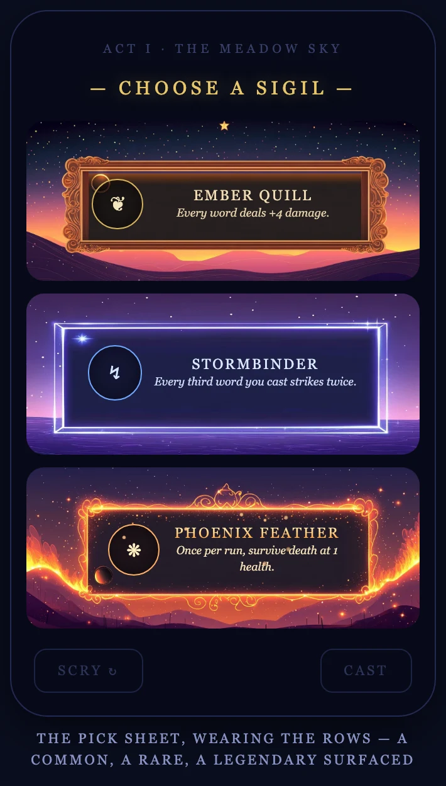
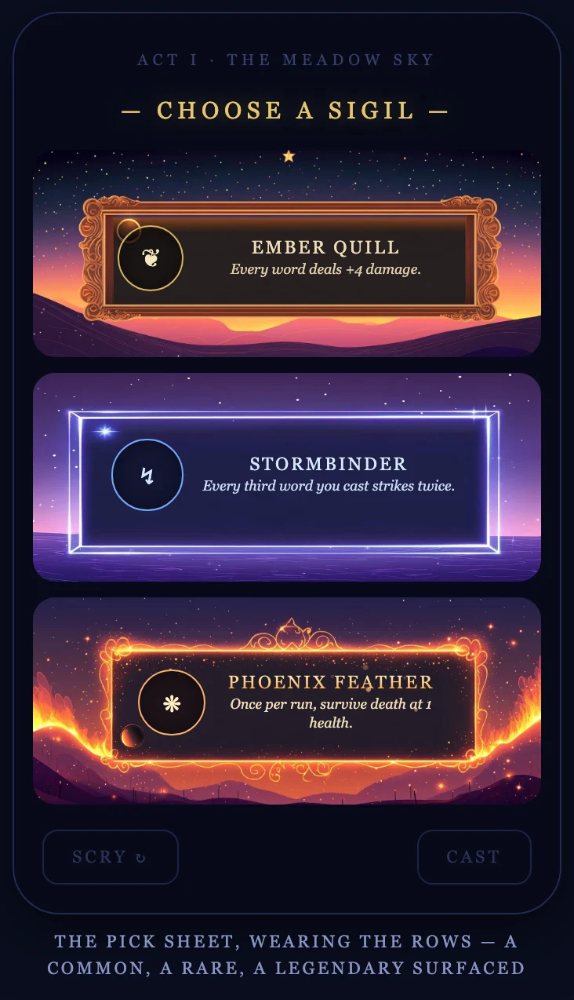
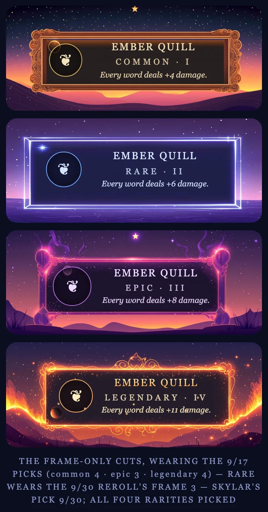
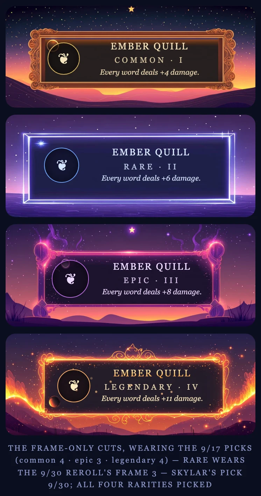
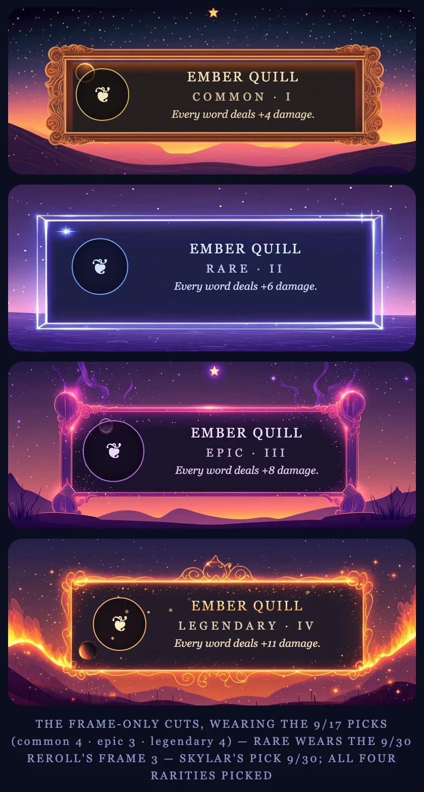
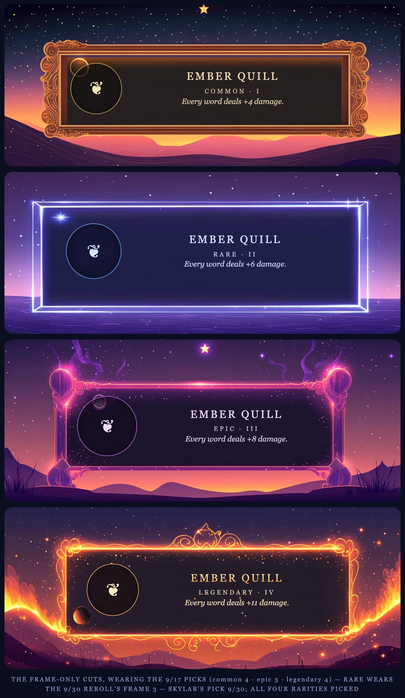

The live review page, rendered through Chrome's device emulation at seven real
viewports — after the one-box law landed (every rarity row is a 49:20 box, frame at ~85% of its
width) and all four frame picks were ruled. Everything below is shown at true relative
scale within its section: a wider device really is wider on this page.
The CHOOSE A SIGIL mock at each phone's own width — the surface Skylar's
screenshot flagged, now with the three boxes identical on every size.
iPhone SE · 375 × 667

iPhone 16 · 393 × 852
iPhone 16 Pro Max · 440 × 956
On every tablet the sheet is identical — the review page pins its phone
mock at 350 px to stay honest about the surface it mocks, so iPad mini through iPad Pro 13″
(portrait or landscape) all render the sheet exactly as below.
Any iPad · mock fixed at 350 px

II · The Four-Rarity Ladder
Ember Quill climbing I → IV at each device's content width. The page's column
caps at 780 px, so iPad Air 11″, iPad Pro 13″ and landscape all draw the same ladder —
shown once.
iPhone SE · column 339 px

iPhone 16 · column 357 px

iPhone 16 Pro Max · column 404 px

iPad mini · column 708 px

iPad Air 11″ · iPad Pro 13″ · landscape · column capped at 780 px
III · The Read
The one-box law holds everywhere. On every viewport the four rows render pixel-identical
boxes; no device brings back the towering blue or the short common.
Smallest phone still reads. On the SE, PHOENIX FEATHER's effect line wraps to two lines
inside its panel — comfortably, with the buffer intact. Nothing collides or overflows.
Tablets are gated by the page, not the design. This is the review page's own column
doing the capping at 780 px. In the game the rows are laid out by the engine at the board's
scale — tablet truth ships with the build, not this mock.
Landscape adds nothing new — same 780 px column, same ladder.